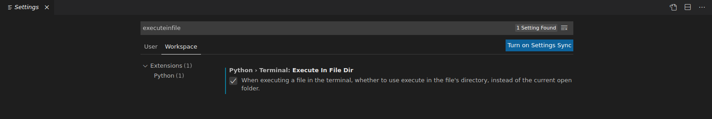
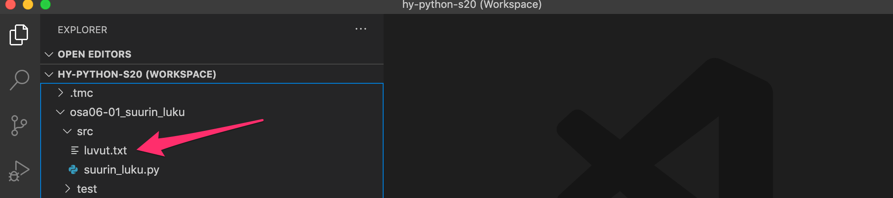
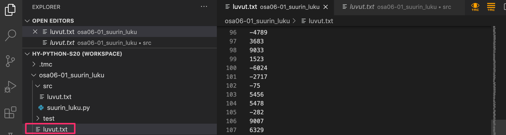
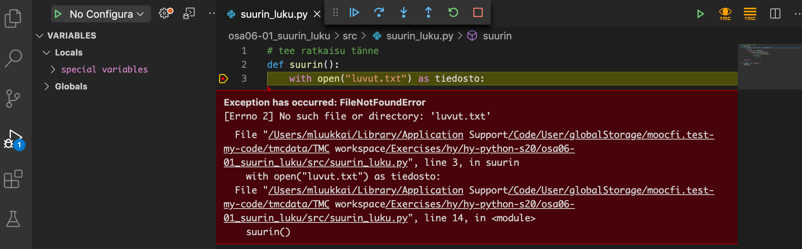

After this section
- You will know how to read the contents of files with Python
- You will know what a text file and a CSV file are
- You will be able to process the contents of a CSV file in your programs
Becoming a proficient programmer requires a lot of practice, sometimes even quite mechanical practice. It also involves developing problem solving skills and applying intuition. This is why there are a lot of exercises of different kinds on this course. Some of them ask you to quite straightforwardly apply what you have learnt in the material, but some of them are intentionally more challenging and open-ended.
Some of the exercises might at first seem overwhelming, but this is nothing to worry about. None of the exercises is strictly mandatory, and in fact _only 25 % of the points in each part is required to pass the course._ You can find more details about passing the course on the [page on grading](/grading-and-exams).
**The exercises are not in any specific order of difficulty.** Each section usually introduces some new programming concepts, and these are then practised with both simpler and more complicated exercises. **If you come across an exercise that feels too difficult, move on to the next one.** You can always come back to the more difficult exercises if you have time later.
When the going inevitably gets tough, a word of consolation: a task that seems impossibly difficult this week will likely feel rather easy in about four weeks' time.
A very common use case for programming is handling data stored in files. Programs can read data from files and write the computed results to files. Even large amounts of data become easy to process automatically when files are used.
On this course we only deal with text files. All the files used will consist of lines of text. As an example, the Visual Studio Code editor we use on this course works with text files. NB: even though word processors such as Microsoft Word are usually used with files that contain text, Word documents themselves aren’t text files. They also contain formatting information, and are encoded in a way that makes handling them in a program more complicated.
Reading data from a file
Let’s first work with a file called example.txt, with the following contents:
Hello there!
This example file contains three lines of text.
This is the last line.
A simple way to include files in a Python program is to use the with statement. The header line opens the file, and the block where the file can be accessed follows. After the block the file is automatically closed, and can no longer be accessed.
So, the following code opens the file, reads the contents, prints them out, and then closes the file:
with open("example.txt") as new_file:
contents = new_file.read()
print(contents)
The variable new_file above is a file handle. Through it the file can accessed while it is still open. Here we used the method read, which returns the contents of the file as a single string. So, in this case the string returned by read would be
"Hello there!\nThis example file contains three lines of text.\nThis is the last line."
Going through the contents of a file
The read method is useful for printing out the contents of the entire file, but more often we will want to go through the file line by line.
Text files can be thought of as lists of strings, each string representing a single line in the file. We can go through the list with a for loop.
The following example reads our example file using a for loop, removes line breaks from the end of each line, counts the number of lines, and prints each line with its line number. It also keeps track of the length of the lines:
with open("example.txt") as new_file:
count = 0
total_length = 0
for line in new_file:
line = line.replace("\n", "")
count += 1
print("Line", count, line)
length = len(line)
total_length += length
print("Total length of lines:", total_length)
There is a line break \n at the end of each line in the file, but the print function also adds a line break by default. There are no extra line breaks in the printout above, because the line breaks at the ends of the lines are removed with the replace method. It replaces each line break character with an empty string. This way the lengths of the lines are also calculated correctly.
The file `numbers.txt` contains integer numbers, one number per line. The contents could look like this:
```sh
2
45
108
3
-10
1100
...etc...
```
Please write a function named `largest`, which reads the file and returns the largest number in the file.
Notice that the function does not take any arguments. The file you are working with is always named `numbers.txt`.
**NB:** If Visual Studio Code can't find the file and you have checked that there are no spelling errors, take a look at the instructions following this exercise.
What if Visual Studio Code cannot find my file?
When you execute your code, Visual Studio Code might complain about not finding the file, even though you have checked and double-checked the file name was written correctly, and the file exists. Changing the following setting may fix the problem:
- Open the settings from the menu bar: File -> Preferences -> Settings
- Find the relevant setting with the search term “executeinfile”
- Choose the tab Workspace
- Select the option under Python -> Terminal -> Execute In File Dir
Your settings window should now look somewhat like this:

If this doesn’t help, you can copy the file in the src directory

directly to the root of the exercise directory

Debugging code which handles files
Using the Visual Studio Code debugger with programs which handle files will often result in a nasty looking error message:

The reason is that the debugger will always look for files in the root of the exercise directory. The Execute In File Dir setting mentioned above will have no effect on this. The easiest solution is to just copy the file to the root of the directory.
You may need to restart Visual Studio Code after copying all the necessary files.
Reading CSV files
A CSV file, short for comma-separated Values, is a text file which contains data separated by a predetermined character. The most common characters used for this purpose are the comma , and the semicolon ;, but any character is, in principle, possible.
CSV files are commonly used to store records of different kinds. Many database and spreadsheet programs, such as Excel, can import and export data in CSV format, which makes data exchange between different systems easy.
We already learnt we can go through the lines in a file with a for loop, but how can we separate the different fields on a single line? Python has a string method split for just this purpose. The method takes the separator character(s) as a string argument, and returns the contents of the target string as a list of strings, separated at the separator.
An example of how the method works:
text = "monkey,banana,harpsichord"
words = text.split(",")
for word in words:
print(word)
Let’s assume we have a file grades.csv, which contains names of students and the grades they received on some courses. Each line has the data of a single student, and the data is separated by a semicolon.
Paul;5;4;5;3;4;5;5;4;2;4
Beth;3;4;2;4;4;2;3;1;3;3
Ruth;4;5;5;4;5;5;4;5;4;4
The following program goes through the file line by line, splits each line into its separate parts, and prints out the name and grades of each student.
with open("grades.csv") as new_file:
for line in new_file:
line = line.replace("\n", "")
parts = line.split(";")
name = parts[0]
grades = parts[1:]
print("Name:", name)
print("Grades:", grades)
Reading the same file multiple times
Sometimes it is necessary to process the contents of a file more than once in a single program. Let’s have a look at a program which works with some personal data stored in a CSV file:
Peter;40;Helsinki
Emily;34;Espoo
Eric;42;London
Adam;100;Amsterdam
Alice;58;Paris
with open("people.csv") as new_file:
# print out the names
for line in new_file:
parts = line.split(";")
print("Name:", parts[0])
# find the oldest
age_of_oldest = -1
for line in new_file:
parts = line.split(";")
name = parts[0]
age = int(parts[1])
if age > age_of_oldest:
age_of_oldest = age
oldest = name
print("the oldest is", oldest)
Running this will result in a somewhat cryptic error message:
Traceback (most recent call last):
print("the oldest is"; oldest)
UnboundLocalError: local variable 'oldest' referenced before assignment
The reason this happens is that the latter for loop is not executed at all, beacuse the file can only be processed once. Once the last line is read, the file handle rests at the end of the file, and the data in the file can no longer be accessed.
If we want to access the contents in the second for loop, we will have to open the file a second time:
with open("people.csv") as new_file:
# print out the names
for line in new_file:
parts = line.split(";")
print("Name:", parts[0])
with open("people.csv") as new_file:
# find the oldest
age_of_oldest = -1
for line in new_file:
parts = line.split(";")
name = parts[0]
age = int(parts[1])
if age > age_of_oldest:
age_of_oldest = age
oldest = name
print("the oldest is", oldest)
While the above code would work, it contains unnecessary repetition. It is usually best to read the file just once, and store its contents in an appropriate format for further processing:
people = []
# read the contents of the file and store it in a list
with open("people.csv") as new_file:
for line in new_file:
parts = line.split(";")
people.append((parts[0], int(parts[1]), parts[2]))
# print out the names
for person in people:
print("Name:", person[0])
# find the oldest
age_of_oldest = -1
for person in people:
name = person[0]
age = person[1]
if age > age_of_oldest:
age_of_oldest = age
oldest = name
print("the oldest is", oldest)
More CSV file processing
Let’s continue with the file grades.csv, which has the following contents:
Paul;5;4;5;3;4;5;5;4;2;4
Beth;3;4;2;4;4;2;3;1;3;3
Ruth;4;5;5;4;5;5;4;5;4;4
This following program creates a dictionary grades based on the contents of the file. The keys are the names of the students, and the value attached to each key is the list of grades attained by the student. The program converts the grades to integer values, so they can be processed easier.
grades = {}
with open("grades.csv") as new_file:
for line in new_file:
line = line.replace("\n", "")
parts = line.split(";")
name = parts[0]
grades[name] = []
for grade in parts[1:]:
grades[name].append(int(grade))
print(grades)
Now we can print out some statistics on each student based on the contents of the dictionary grades:
for name, grade_list in grades.items():
best = max(grade_list)
average = sum(grade_list) / len(grade_list)
print(f"{name}: best grade {best}, average {average:.2f}")
Please take a careful look at the program in the example above. It may seem a bit complicated at first, but the technique can be used on files containing many different types of data.
Removing unnecessary lines, spaces and line breaks
Let’s assume we have a CSV file containing some names, which has been exported from Excel:
first; last
Paul; Python
Jean; Java
Harry; Haskell
Excel is notorious for adding extra whitespace. Here we have an extra space character between the items, after each semicolon.
We would like to print out the last names of each person on the list. The first line contains the headers for the data, and it can be safely ignored:
last_names = []
with open("people.csv") as new_file:
for line in new_file:
parts = line.split(";")
# ignore the header line
if parts[0] == "first":
continue
last_names.append(parts[1])
print(last_names)
Exectuing this would print out
[' Python\n', ' Java\n', ' Haskell']
The first two items have a line break character at the end, and all three have an extra leading space character.
We have already used the replace method to remove extra whitespace, but a more efficient solution is to use the Python string method strip, which removes whitespace from the beginning and end of a string. It removes all spaces, line breaks, tabs and other characters which would not normally be printed out.
You can try it out in the Python console:
>>> " tryout ".strip()
'tryout'
>>> "\n\ntest\n".strip()
'test'
>>>
Stripping the string requires only a small change to the program:
last_names = []
with open("people.csv") as new_file:
for line in new_file:
parts = line.split(';')
if parts[0] == "first":
continue # this was the header line, so it is ignored
last_names.append(parts[1].strip())
print(last_names)
Now we have the desired tidy printout:
['Python', 'Java', 'Haskell']
There are also the related string methods lstrip and rstrip. They remove only the leading or trailing unprintable characters, l for the left edge of the string and r for the right:
>>> " teststring ".rstrip()
' teststring'
>>> " teststring ".lstrip()
'teststring '
Combining data from different files
It is very common for the data processed by a program to be scattered in multiple files. Lets have a look at a situation where the personal details of the personnel of a company are stored in a file called employees.csv:
pic;name;address;city
080488-123X;Pekka Mikkola;Vilppulantie 7;00700 Helsinki
290274-044S;Liisa Marttinen;Mannerheimintie 100 A 10;00100 Helsinki
010479-007Z;Arto Vihavainen;Pihapolku 4;01010 Kerava
010499-345K;Leevi Hellas;Tapiolantie 11 B;02000 Espoo
The salaries are stored in a separate file salaries.csv:
pic;salary;bonus
080488-123X;3300;0
290274-044S;4150;200
010479-007Z;1300;1200
Each data line in both files contains the personal identity code, which identifies whose data we are dealing with. Using the personal identity code as a common factor, it is easy to connect the names and salaries of each employee. We can, for example, print out the following list of monthly incomes:
incomes:
Pekka Mikkola 3300 euros
Liisa Marttinen 4350 euros
Arto Vihavainen 2500 euros
This program uses two dictionaries as helper data structures: names and salaries. Both use the PIC as key:
names = {}
with open("employees.csv") as new_file:
for line in new_file:
parts = line.split(';')
if parts[0] == "pic":
continue
names[parts[0]] = parts[1]
salaries = {}
with open("salaries.csv") as new_file:
for line in new_file:
parts = line.split(';')
if parts[0] == "pic":
continue
salaries[parts[0]] = int(parts[1]) +int(parts[2])
print("incomes:")
for pic, name in names.items():
if pic in salaries:
salary = salaries[pic]
print(f"{name:16} {salary} euros")
else:
print(f"{name:16} 0 euros")
First the program produces the dictionaries names and salaries. They have the following contents:
{
'080488-123X': 'Pekka Mikkola',
'290274-044S': 'Liisa Marttinen',
'010479-007Z': 'Arto Vihavainen',
'010499-345K': 'Leevi Hellas'
}
{
'080488-123X': 3300,
'290274-044S': 4350,
'010479-007Z': 2500
}
The for loop at the end of the program combines the names of the employees with their respective salaries.
The program also takes care of situations where the employee’s pic is not present in the salary file.
Remember, the order in which items are stored in a dictionary does not matter, as the keys are processed based on hash values.
This program works with two CSV files. One of them contains information about some students on a course:
```csv
id;first;last
12345678;peter;pythons
12345687;jean;javanese
12345699;alice;adder
```
The other contains the number of exercises each student has completed each week:
```csv
id;e1;e2;e3;e4;e5;e6;e7
12345678;4;1;1;4;5;2;4
12345687;3;5;3;1;5;4;6
12345699;10;2;2;7;10;2;2
```
As you can see above, both CSV files also have a header row, which tells you what each column contains.
Please write a program which asks the user for the names of these two files, reads the files, and then prints out the total number of exercises completed by each student. If the files have the contents in the examples above, the program should print out the following:
Student information: **students1.csv**
Exercises completed: **exercises1.csv**
pekka peloton 21
jaana javanainen 27
liisa virtanen 35
Hint: while testing your program, you may quickly run out of patience if you always have to type in the file names at the prompt. You might want to hard-code the user input, like so:
```python
if False:
# this is never executed
student_info = input("Student information: ")
exercise_data = input("Exercises completed: ")
else:
# hard-coded input
student_info = "students1.csv"
exercise_data = "exercises1.csv"
```
The actual functionality of the program is now "hidden" in the `False` branch of an `if` statement. It will never be executed.
Now, if you want to quickly verify the program works correctly also with user input, you can just replace `False` with `True`:
```python
if True:
student_info = input("Student information: ")
exercise_data = input("Exercises completed: ")
else:
# now this is the False branch, and is never executed
student_info = "students1.csv"
exercise_data = "exercises1.csv"
```
When you have verified your program works correctly, you can remove the `if` structure, keeping the commands asking for input.
**NB:** this exercise doesn't ask you to write any functions, so you should __not__ place any code within an `if __name__ == "__main__"` block.
**NB2:** If Visual Studio can't find the file and you have checked that there are no spelling errors, take a look at [these instructions](/part-6/1-reading-files#what-if-visual-studio-code-cannot-find-my-file).
Let's expand the program created in the previous exercise. Now also the exam points awarded to each student are contained in a CSV file. The contents of the file follow this format:
```csv
id;e1;e2;e3
12345678;4;1;4
12345687;3;5;3
12345699;10;2;2
```
In the above example the student whose student number is 12345678 was awarded 4+1+4 points in the exam, which equals a total of 9 points.
The program should again ask the user for the names of the files. Then the program should process the files and print out a grade for each student.
Student information: **students1.csv**
Exercises completed: **exercises1.csv**
Exam points: **exam_points1.csv**
pekka peloton 0
jaana javanainen 1
liisa virtanen 3
Each completed exercise is counted towards _exercise points_, so that completing at least 10 % of the total exercices awards 1 point, completing at least 20 % awards 2 points, etc. Completing all 40 exercises awards 10 points. The number of points awarded is always an integer number.
The final grade for the course is determined based on the sum of exam and exercise points according to the following table:
exam points + exercise points | grade
:--:|:----:
0-14 | 0 (fail)
15-17 | 1
18-20 | 2
21-23 | 3
24-27 | 4
28- | 5
**NB:** this exercise doesn't ask you to write any functions, so you should __not__ place any code within an `if __name__ == "__main__"` block.
This exercise will continue from the previous one. Now we shall print out some statistics based on the CSV files.
Student information: **students1.csv**
Exercises completed: **exercises1.csv**
Exam points: **exam_points1.csv**
name exec_nbr exec_pts. exm_pts. tot_pts. grade
pekka peloton 21 5 9 14 0
jaana javanainen 27 6 11 17 1
liisa virtanen 35 8 14 22 3
Each row contains the information for a single student. The number of exercises completed, the number of exercise points awarded, the number of exam points awarded, the total number of points awarded, and the grade are all displayed in tidy columns. The width of the column for the name should be 30 characters, while the other columns should be 10 characters wide.
You might find the f-strings covered in [part 4](/part-4/5-print-statement-formatting) useful here.
F-strings differentiate between strings and numbers when it comes to justifying columns:
```python
word = "python"
print(f"{word:10}continues")
print(f"{word:>10}continues")
```
python continues
pythoncontinues
As you can see above, by default strings are justified to the _left_ edge of the area specified for them. The `>` symbol can be used to justify to the right edge.
With number values the logic is reversed:
```python
number = 42
print(f"{number:10}continues")
print(f"{number:<10}continues")
```
42continues
42 continues
With numbers the default behaviour is to justify to the _right_ edge. The symbol `<` can be used to justify to the left edge.
**NB:** this exercise doesn't ask you to write any functions, so you should __not__ place any code within an `if __name__ == "__main__"` block.
Please write a program which asks the user to type in some text. Your program should then perform a spell check, and print out feedback to the user, so that all misspelled words have stars around them. Please see the two examples below:
Write text: **We use ptython to make a spell checker**
We use *ptython* to make a spell checker
Write text: **This is acually a good and usefull program**
This is *acually* good and *usefull* program
The case of the letters should be irrelevant to the functioning of your program.
The exercise template includes the file `wordlist.txt`, which contains all the words the spell checker should accept as correct.
**NB:** this exercise doesn't ask you to write any functions, so you should __not__ place any code within an `if __name__ == "__main__"` block.
**NB2** If Visual Studio can't find the file and you have checked that there are no spelling errors, take a look at [these instructions](/part-6/1-reading-files#what-if-visual-studio-code-cannot-find-my-file).
This exercise is about creating a program which allows the user to search for recipes based on their names, preparation times, or ingredients used. The program should read the recipes from a file submitted by the user.
Each recipe consists of three or more lines. The first line has the name of the recipe, the second line contains an integer number representing the preparation time in minutes, and the remaining line or lines contain the ingredients used, one on each line. The recipe ends with an empty line, with the exception of the final recipe in the file which just ends with the end of the file. So, there can be more than one recipe in a single file, like in the example below.
```sh
Pancakes
15
milk
eggs
flour
sugar
salt
butter
Meatballs
45
mince
eggs
breadcrumbs
Tofu rolls
30
tofu
rice
water
carrot
cucumber
avocado
wasabi
Cake pops
60
milk
bicarbonate
eggs
salt
sugar
cardamom
butter
```
**Hint:** it might be best to first read through all the lines in the file and pop them into a list, which is then easier to manipulate in the way described in the exercise.
#### Search for recipes based on the name of the recipe
Please write a function named `search_by_name(filename: str, word: str)`, which takes a filename and a search string as its arguments. The function should go through the file and select all recipes whose _name_ contains the given search string. The names of these recipes are then returned in a list.
An example of the function in action:
```python
found_recipes = search_by_name("recipes1.txt", "cake")
for recipe in found_recipes:
print(recipe)
```
Pancakes
Cake pops
As you can see in the example above, the case of the letters is irrelevant. The search term _cake_ returns both _Pancakes_ and _Cake pops_, even though the latter is capitalized.
**NB:** If Visual Studio can't find the file and you have checked that there are no spelling errors, take a look at [these instructions](/part-6/1-reading-files#what-if-visual-studio-code-cannot-find-my-file).
#### Search for recipes based on the preparation time
Please write a function named `search_by_time(filename: str, prep_time: int)`, which takes a filename and an integer as its arguments. The function should go through the file and select all recipes whose preparation time is at most the number given.
The names of these recipes are again returned in a list, but the preparation time should be appended to each name. Please have a look at the example below.
```python
found_recipes = search_by_time("recipes1.txt", 20)
for recipe in found_recipes:
print(recipe)
```
Pancakes, preparation time 15 min
#### Search for recipes based on the ingredients
**A word of caution:** this third part of the exercise is considerably more demanding than the previous two. If you feel like you aren't making headway, it may be worth your while to move on, complete the other exercises in this part of the material, and then come back to this exercise if you have time later. Remember, you can submit and receive points for the first two parts of this exercise even if you haven't completed the third part.
Please write a function named `search_by_ingredient(filename: str, ingredient: str)`, which takes a filename and a search string as its arguments. The function should go through the file and select all recipes whose _ingredients_ contain the given search string.
The names of these recipes are returned in a list just like in the second part, with the preparation time appended. Please have a look at the example below.
```python
found_recipes = search_by_ingredient("recipes1.txt", "eggs")
for recipe in found_recipes:
print(recipe)
```
Pancakes, preparation time 15 min
Meatballs, preparation time 45 min
Cake pops, preparation time 60 min
In this exercise we will write some functions for working on a file containing location data from the stations for [city bikes in Helsinki](https://www.hsl.fi/en/citybikes).
Each file will follow this format:
```csv
Longitude;Latitude;FID;name;total_slot;operative;id
24.950292890004903;60.155444793742276;1;Kaivopuisto;30;Yes;001
24.956347471358754;60.160959093887129;2;Laivasillankatu;12;Yes;002
24.944927399779715;60.158189199971673;3;Kapteeninpuistikko;16;Yes;003
```
Each station has a single line in the file. The line contains the coordinates, name, and other identifying information for the station.
#### Distance between stations
First, write a function named `get_station_data(filename: str)`. This function should read the names and locations of all the stations in the file, and return them in a dictionary with the following format:
{
"Kaivopuisto": (24.950292890004903, 60.155444793742276),
"Laivasillankatu": (24.956347471358754, 60.160959093887129),
"Kapteeninpuistikko": (24.944927399779715, 60.158189199971673)
}
Dictionary keys are the names of the stations, and the value attached is a tuple containing the location coordinates of the station. The first element in the tuple is the _Longitude_ field, and the second is the _Latitude_ field.
Next, write a function named `distance(stations: dict, station1: str, station2: str)`, which returns the distance between the two stations given as arguments.
The distance is calculated using the Pythagorean theorem. The multiplication factors below are approximate values for converting latitudes and longitudes to distances in kilometres in the Helsinki region.
```python
# we will need the function sqrt from the math module
import math
x_km = (longitude1 - longitude2) * 55.26
y_km = (latitude1 - latitude2) * 111.2
distance_km = math.sqrt(x_km**2 + y_km**2)
```
Some examples of the function in action:
```python
stations = get_station_data('stations1.csv')
d = distance(stations, "Designmuseo", "Hietalahdentori")
print(d)
d = distance(stations, "Viiskulma", "Kaivopuisto")
print(d)
```
0.9032737292463177
0.7753594392019532
**NB:** If Visual Studio can't find the file and you have checked that there are no spelling errors, take a look at [these instructions](/part-6/1-reading-files#what-if-visual-studio-code-cannot-find-my-file).
#### The greatest distance
Please write a function named `greatest_distance(stations: dict)`, which works out the two stations on the list with the greatest distance from each other. The function should return a tuple, where the first two elements are the names of the two stations, and the third element is the distance between the two.
```python
stations = get_station_data('stations1.csv')
station1, station2, greatest = greatest_distance(stations)
print(station1, station2, greatest)
```
Laivasillankatu Hietalahdentori 1.478708873076181